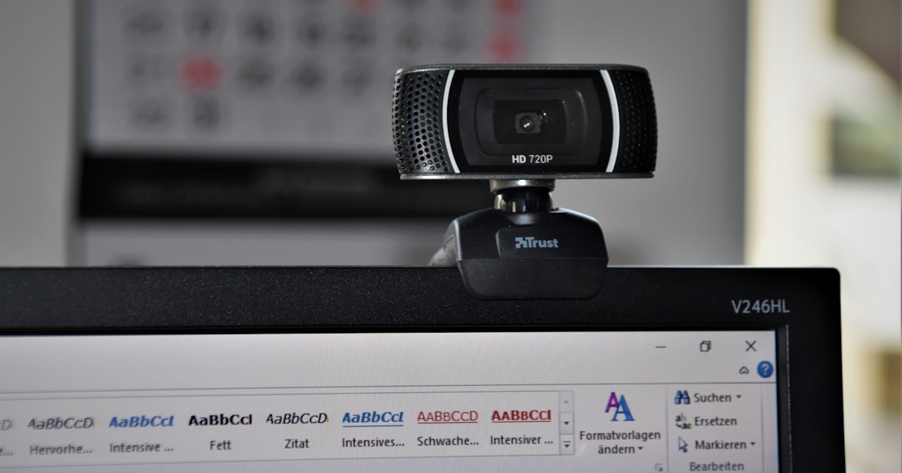

Webcams fürs Home-Office im Vergleich: Full HD, 4K oder mit Licht?

Foto: Unsplash
Ob Meeting mit dem Team oder Kundengespräch – die eingebaute Laptop-Kamera reicht vielen irgendwann nicht mehr. Aber muss es gleich 4K sein oder tut es eine einfache Full-HD-Cam? Diese Kaufberatung vergleicht die drei gängigen Webcam-Klassen und zeigt, welche Ausstattung für Video-Calls wirklich einen Unterschied macht.
Die drei Klassen im Überblick
| Klasse | Typische Ausstattung | Für wen | Preis |
|---|---|---|---|
| Full-HD-Webcam Empfehlung | 1080p-Auflösung, Autofokus, eingebautes Mikrofon | Regelmäßige Video-Calls und Meetings | ca. 30–70 € |
| 4K-Webcam | Höhere Auflösung, oft besserer Sensor, teils digitaler Zoom | Aufnahmen, Streaming, hohe Bildqualitätsansprüche | ca. 100–200 € |
| Webcam mit Ringlicht | Integrierte oder aufgesetzte LED-Beleuchtung, meist Full HD | Dunkle Räume, Abend-Calls, viel Fokus auf Bildwirkung | ca. 50–100 € |
Full-HD-Webcam
ca. 30–70 € Unsere EmpfehlungFür die meisten Video-Calls im Home-Office ist eine solide Full-HD-Webcam mit 1080p völlig ausreichend – die meisten Meeting-Tools komprimieren das Bild ohnehin, sodass höhere Auflösungen kaum sichtbar werden. Wichtiger als die reine Pixelzahl sind ein zuverlässiger Autofokus und ein brauchbares eingebautes Mikrofon.
Stärken
- Deutlich schärferes Bild als jede eingebaute Laptop-Kamera
- Günstigster Einstieg mit gutem Preis-Leistungs-Verhältnis
Schwächen
- Bei schlechtem Umgebungslicht wirkt das Bild schnell blass oder körnig
* Affiliate-Link
4K-Webcam
ca. 100–200 €Eine 4K-Webcam lohnt sich vor allem, wenn du Video-Inhalte aufnimmst, streamst oder digital zoomst – dort bleibt die höhere Ausgangsauflösung tatsächlich sichtbar. Für normale Meetings über gängige Video-Tools ist der Unterschied zur Full-HD-Klasse dagegen oft kaum wahrnehmbar, da das Bild ohnehin herunterskaliert wird.
Stärken
- Mehr Bildreserve für digitalen Zoom oder Zuschnitt
- Oft hochwertigerer Sensor und bessere Optik als Einsteigermodelle
Schwächen
- Deutlicher Aufpreis, den man in normalen Calls kaum sieht
- Höhere Datenrate kann bei schwacher Internetverbindung zum Nachteil werden
* Affiliate-Link
Webcam mit Ringlicht
ca. 50–100 €Wer am Schreibtisch wenig Tageslicht hat oder häufig abends in Calls sitzt, profitiert oft mehr von zusätzlichem Licht als von mehr Auflösung. Ein integriertes oder aufgesetztes Ringlicht sorgt für gleichmäßige Ausleuchtung im Gesicht und wirkt dem typischen "Gegenlicht-Problem" bei Fenstern im Rücken entgegen.
Stärken
- Deutlich besserer Bildeindruck bei schlechtem Umgebungslicht
- Meist mit dimmbarer Helligkeit oder Farbtemperatur
Schwächen
- Kameraqualität selbst liegt meist nur auf Full-HD-Niveau
* Affiliate-Link
Checkliste: Darauf kommt es beim Kauf an
- Autofokus: hält das Bild scharf, auch wenn du dich beim Sprechen bewegst
- Sichtfeld (FOV): ein moderates Sichtfeld wirkt natürlicher als extreme Weitwinkel
- Mikrofon: für spontane Calls praktisch, für regelmäßige Meetings lohnt sich oft ein separates Mikro
- Lichtverhalten: wie gut kommt die Kamera mit Gegenlicht oder dunklen Räumen zurecht
- Kompatibilität: Anschluss (meist USB) und Unterstützung der genutzten Meeting-Software prüfen
Häufige Fragen
Reicht eine Full-HD-Webcam fürs Home-Office?
Für die meisten Video-Calls ja: 1080p mit gutem Autofokus und eingebautem Mikrofon ist völlig ausreichend, da die meisten Meeting-Tools das Bild ohnehin komprimieren. 4K lohnt sich nur bei Aufnahmen oder Streaming, wo die höhere Auflösung tatsächlich sichtbar bleibt.
Bringt eine 4K-Webcam für normale Video-Calls einen sichtbaren Unterschied?
Kaum, solange die Plattform das Bild auf 1080p oder weniger herunterrechnet. Der Vorteil zeigt sich vor allem bei Aufnahmen für später oder bei digitalem Zoom, wo mehr Ausgangsauflösung mehr Spielraum lässt.
Wann lohnt sich eine Webcam mit Ringlicht?
Wenn der Arbeitsplatz wenig Tageslicht hat oder abends oft Calls anstehen. Gleichmäßiges Licht im Gesicht verbessert den Bildeindruck oft mehr als eine höhere Auflösung.
Fazit
Für die meisten Home-Office-Arbeitenden ist eine gute Full-HD-Webcam (30–70 €) die richtige Wahl: Autofokus und Mikrofon decken den Alltag in Video-Calls zuverlässig ab. 4K lohnt sich nur bei Aufnahmen oder hohen Qualitätsansprüchen, ein Ringlicht dagegen fast immer dann, wenn der Arbeitsplatz wenig natürliches Licht abbekommt.